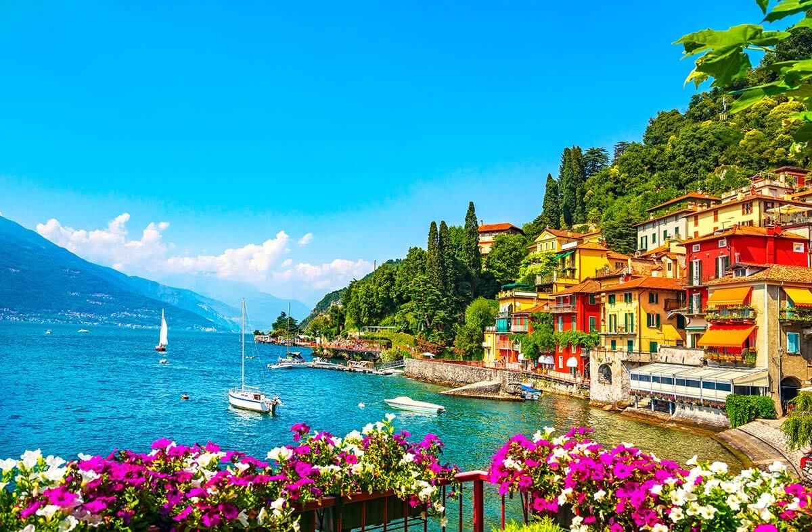

Italia es una república parlamentaria del sur de Europa con 58.9 millones de habitantes y su capital en Roma. Es considerada una de las grandes potencias culturales, históricas y económicas del continente.

Geografía y Territorio
La bota mediterránea: Su territorio continental tiene la icónica forma de una bota y está rodeado por el mar Mediterráneo, limitando al norte con la cordillera de los Alpes.
Islas y microestados: Incluye las grandes islas de Sicilia y Cerdeña, y alberga en su interior a dos estados independientes: San Marino y la Ciudad del Vaticano.
Naturaleza activa: El relieve está atravesado por los Apeninos y cuenta con volcanes históricamente activos como el Etna y el Vesubio.
Historia y Cultura
Cuna de imperios: Fue el epicentro del Imperio Romano, el cual sentó las bases del derecho, la arquitectura y el idioma latín en Occidente.
El Renacimiento: Durante los siglos XV y XVI, ciudades como Florencia y Venecia impulsaron una revolución artística y científica de la mano de genios como Leonardo da Vinci y Miguel Ángel.
Patrimonio mundial: Su unificación como país moderno ocurrió en 1861. Actualmente compite a nivel global por ser el país con más bienes declarados Patrimonio de la Humanidad por la UNESCO
Economía y Sociedad
Potencia industrial: Es la tercera economía de la eurozona y miembro del G7. Presenta un norte muy industrializado frente a un sur de tradición más agrícola y turística.
Sello "Made in Italy": Goza de prestigio internacional gracias a su gastronomía (exportadora de vino, pasta y quesos), la alta moda de Milán (Armani, Gucci) y la automoción de lujo (Ferrari, Lamborghini).
>AGobierno actual: Su sistema político cuenta con Sergio Mattarella como presidente y Giorgia Meloni como primera ministra.